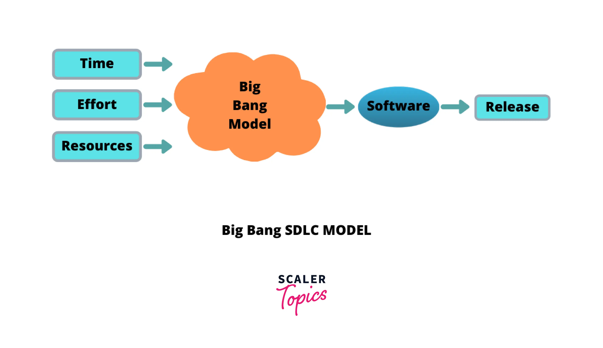

Mis on Big Bang Model?
Big Bang Model on tarkvaraarenduse lähenemisviis, kus kogu arendusprotsess põhineb ressursside (aeg, raha, inimesed) kasutamisel ilma selgelt määratletud plaanita. Arendajad alustavad projekti, lihtsalt kombineerides vajalikud sisendid ja lootes, et lõpptulemus vastab nõuetele.
Seda mudelit kasutatakse tavaliselt väiksemate projektide puhul või juhtudel, kus nõuded pole alguses selged. See sobib kõige paremini väikestele meeskondadele ja lihtsatele projektidele.
Peamised omadused
- Mudeli lihtsus: pole keerulisi protseduure ega struktureeritud etappe.
- Nõuab minimaalseid planeerimistegevusi ja dokumentatsiooni.
- Sobib projektidele, kus nõuded võivad projekti käigus muutuda või pole üldse teada.
Big Bang Model arendustsükkel
Allpool on näide Big Bang mudeli arendustsüklist:
Eelised ja puudused
Eelised
- Lihtne ja kiire alustada ilma palju planeerimiseta.
- Sobib väikestele projektidele, kus nõuded pole alguses selged.
- Väike administratiivne koormus.
Puudused
- Suurem risk, et projekt ebaõnnestub, kuna pole selget plaani.
- Ei sobi suurtele ja keerukatele projektidele.
- Piiratud ressursside kasutamine võib viia soovimatute tulemusteni.
Case-vahend: Excel ja lihtsad tööriistad
Kuna Big Bang mudel ei kasuta struktureeritud protsesse, sobivad selle lähenemisviisi toetamiseks lihtsad vahendid nagu Excel, Google Sheets või sarnased dokumendihaldustööriistad, et jälgida põhivajadusi ja kulusid.
Kasutusviis:
1. Looge Exceli tabel, kuhu sisestate projekti põhivajadused.
2. Kasutage lihtsaid graafikuid või märkmeid, et jälgida projekti edasiminekut.
3. Testige lõpptulemust ja koguge tagasisidet, et teha vajalikke parandusi.